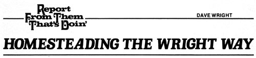
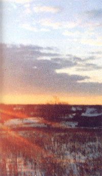
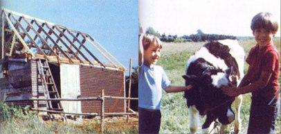

Hello out there in magazine land ... Dave Wright here, along with my wife (Virginia) and our two sons (Corey and Mike). We're four self-styled homesteaders trying-with the aid of an ever-increasing number of fourlegged companions-to live the good life out here in a small western Michigan community of 700 souls (Kent City) surrounded by a sea of farms.
It's hard to believe we've been here four years. When we first set foot on our farmbags in hand and babies in arm-we were some of the greenest young Idealists you'd ever want to meet. We were prepared to do battle with insects and wild things on their own terms. We were also hungry for air that didn't have to be strained before you could inhale it. And a background noise level somewhere below 500 decibels. And mostly, a better life for ourselves and our children.
We were sure we'd found Valhalla when we moved here from the city. (Valhalla-to us-was one entire acre of our own land, with a house, two small sheds, and 60 dwarf fruit trees of all kinds.) We had everything we wanted ... we thought. But then, two years later, when a 10-acre parcel next to us came up for sale ... well, once again, we hocked our socks and bought it.
So now we hold contracts on all of eleven acres and we're mortgaged up to our foreheads, but by our standards it's worth every cent we owe. With this investment, we're assured of a never-ending supply of fresh fruit and vegetables, naturally grown. Forever. And that means a lot to us.
As time rolled by, we undertook many and varied ventures, one of which was the raising of day-old chicks to laying hens. This programlet me assure you-did not go unnoticed by our neighbor's dog, who (at the appropriate time) became a part of our farm problems. With the money my neighbor gave me for his canine's "midnight snack", however, I was able to purchase two calves from a local farmer. (The animals were only three days old and took a lot of work to raise, but they pulled through and it was fun.) One thing led to another, and soon I was raising more young steers to veal (or feeder calf) size and selling them at the local livestock auction.
Life was real good at that point ... so good-in fact-that I quit my city job and went to work for a local pole-barn builder. Sure, the money was less ... but by this time, we were raising 90% of our food and we had some new hens (in a dog-proof house), so we really didn't need a lot to get by on (land payments of $175 a month and taxes were about all). The idea of not having to go back to the city again is what decided it for me.
Of course, we still needed to buy some of our staple food items: flour, sugar, milk, etc. (We hadn't yet gotten our act together to the point where we had a wheat patch, honeybees, and so on.) We decided to take care of the milk problem first.
Now, a cow was out of the question. Cows-we decided-cost too much to buy and keep, and anyway, they give too dang much milk. (I do believe they'd drown you if you gav6 'em half a chance!) But a goat ... now there-it seemedwas an animal just right for our needs. Mind you, I knew less about goats than seawater distillation, but I figured one could always learn ... right?
And so it was that one evening the boys and I loaded up two calves and headed for nearby Ravenna (the site of the livestock auction). This was one of those salebarns where the auctioneer was paid on a commission basis. That is, the more he bid the price up for your cow with the broken leg, the bigger his "take" . . . which is great, when you're selling. But if you're buying ... well, you'd best stay on your toes and know what the bid is.
To make a long evening short, I ended up selling my calves for $80 and buying a goat for $20. The little nanny I chose was pleasantly plump (a sure sign of good health, I thought) and unusually calm (which suggested to me that she'd be patient in the hands of a novice goatherder). I felt I had made a good deal.
I should've had misgivings when the auctioneer-upon closing the salechuckled softly into the microphone, Actually, though, the first inkling of trouble came when I was loading my prize into the pickup. As I secured Greta (that was her name, I decided) in place, a fellow goatherder leaned on my tailgate and we struck up a conversation.
I admitted my ignorance in matters pertaining to ruminating animals of the goat persuasion and explained that I intended to learn more about the creatures after having Greta bred and while waiting for her to foal or deliver or whatever it is they do.
A sly grin crossed my friend's yellow teeth as he stepped into the back of my truck, grasped Greta's underside, and said, "Hell, boy, she's already got a bun in the oven!"
The news left me stunned. (My sons, however, received the news as if I'd inherited a Tootsie Roll factory!) I decided that the better part of valor was to run scared. And-with no time to lose-that's what I did ... I ran right to the house of my friend, Gordy.
You see, Gordy is somewhat of a professor of Goatatology in these parts, and he was soon to become my guru in these matters. At any rate, I presented Greta to him and blurted, "I think I've got a pregnant goat here!"
Gordy looked her over and pronounced his diagnosis: "Yep, that's a goat all right. And yep, she's sure pregnant!" Gordy further informed me that the date for the blessed event was only a week off.
Armed with books on everything from hooftrimming to horn-lopping, I left Gordy's house, wondering how I was going to explain this unwed mother to my wife.
Over the next week, I read and read, As the days rolled by, one week turned into two, and pretty soon I was convinced that the ingestion of watermelon seeds made more sense than pregnancy! At the end of three weeks, I was sure Greta had had relations with a water buffalo. My nerves were a shambles.
Then-on the 13th of June, at about 7:00 p.m.-my son Corey rushed through the door and babbled something about "she had them".
Them. Them! That means more than one!
As soon as the signs of cardiac arrest subsided, I beat feet for the barn, where I found three little blinkers blinking their firstever blinks ... still covered with a nastylooking bag that momma was trying to chomp down at a rapid rate. All the reading I had done raced up to meet me now like a ton of lead. Facts rushed into my consciousness faster than I could put them into action. All I could do was sit there looking at those creations of God's hand and wonder at the beauty of it all.
I finally did salvage my wits enough to recall that if she ate all that amniotic whatsit, she might develop gas and not be able to eat the more choice goodies. So I made an attempt to remove the offensive matter right away (partly for momma's sake, and partly because I had no desire to sit arears a goat with gas).
I'm happy to say that in spite of my "learn by doing" approach to goat-raising, all of Greta's kids are doing just fine now and I'm milking three quarts per day from mommy for our own use. With continuing help from Gordy and Bromo-Seltzer, we will all-I'm sure-turn into fine goatherders.
The cherries on our dwarf fruit trees are ripening now, and boy, I can't tell you how delicious fresh cherry pie tastes with cold goat's milk that you know is fresh and pure, All I can say is that life just keeps getting better and better, and I don't know where it will end.
I just thank God we moved out here four years ago. And-as I sit in my nice, warm kitchen (where a skillet of our own eggs is frying on the wood stove), eating bread with homemade jelly and drinking coffee sweetened with goat cream-I pray the same can happen for you.
Peace,
Dave
|
 PHOTOS BY THE AUTHOR |
 |
 |